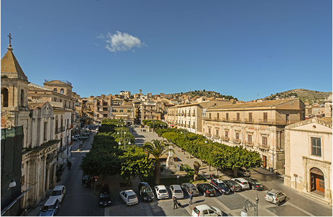
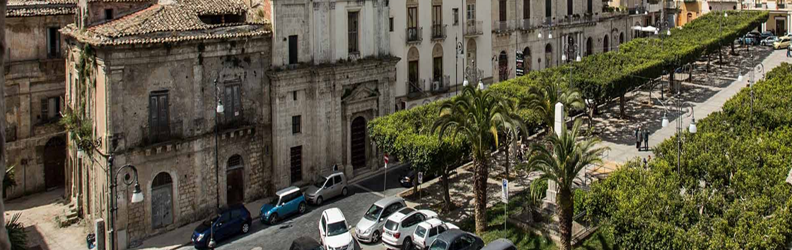
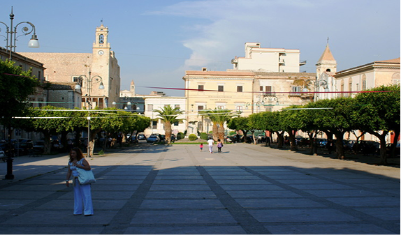
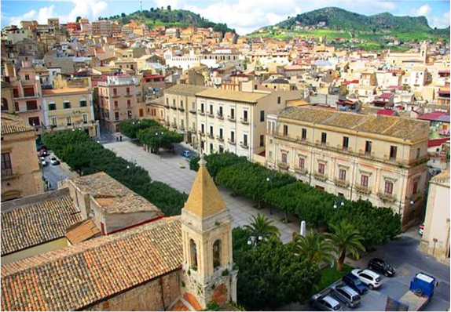

Il salotto urbano di Agrigento
Piazza Cavour è una delle piazze più conosciute della città di Agrigento, situata al centro del Viale della Vittoria. La piazza costituisce un naturale punto di incontro per cittadini di tutte le età, grazie alla sua posizione centrale e all’ampio spazio aperto che la caratterizza.
Oggi Piazza Cavour si presenta con un aspetto accogliente ed è ideale per momenti di socialità. La piazza è affiancata da edifici in stile liberty, che le conferiscono un fascino discreto, testimonianza dell’evoluzione urbana della città nel corso del Novecento.

Un angolo si storia, arte ed eleganza
Piazza Cavour ospita opere d’arte e dettagli storici spesso poco noti ai visitatori. Tra questi spiccano le eleganti statue e aiuole ornamentali che decorano la piazza ed elementi che richiamano lo stile liberty del primo Novecento.
Spesso la piazza diventa palcoscenico per eventi culturali e spettacoli all’aperto, come concerti di musica locale, mostre temporanee e attività per bambini, valorizzando il ruolo della piazza come punto di incontro tra tradizione e vita contemporanea.

Spazio di vita quotidiana
Nel corso degli anni la piazza è stata spesso luogo di iniziative pubbliche e di eventi rivolti alla comunità, come attività di prevenzione organizzate dalle istituzioni locali. Questi momenti rafforzano il ruolo della piazza come spazio vivo di incontro e di scambio e luogo di partecipazione civica.
Piazza Cavour non è solo un’area di passaggio, ma un luogo dove la vita cittadina si esprime quotidianamente: famiglie, studenti e lavoratori la attraversano ogni giorno, contribuendo a renderla uno dei cuori pulsanti della città. La vicinanza a bar, negozi e spazi pubblici ne fa un punto di riferimento per chi visita Agrigento o vive nel centro urbano.
